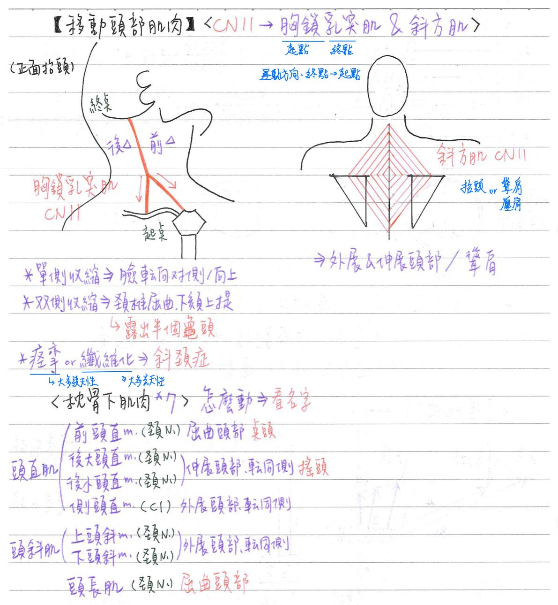

🗣️ 肌肉系統：移動頭部肌肉
頸部肌肉移動頭部的肌肉：皆為★CN11支配
| 肌肉 | 運動 | 起點 | 終點 | 備註 |
|---|---|---|---|---|
| 胸鎖乳突肌(sternocleidomastoid m.) | 單側收縮：頭轉向對側/向上 雙側收縮：頸椎屈曲、下頦上提、頭向前移 | 兩頭：胸骨柄&鎖骨內上緣 | 顳骨乳突外側 | 落枕：胸鎖乳突肌痙攣 ★[110-2]斜頸症(torli colli)：胸鎖乳突肌痙攣or纖維化 |
| 斜方肌(trapezius m.) | 外展&伸展頭部 聳壓肩膀 | 頸韌帶&C7-T12的棘突 | 肩胛骨(★肩胛棘上緣&肩峰) 鎖骨 |
- 頸韌帶：顱底~C7的棘上韌帶
背部肌肉：由淺→深；皆為頸N支配 [夾長棘半⇒家長機掰]
| 肌肉 | 運動 | 備註 |
|---|---|---|
| 頭夾肌(splenius capitis m.) | 伸展頭部、轉同側 | 夾肌 |
| 頭最長肌(longissimus capitis m.) | 伸展頭部、轉同側 | 脊柱直立肌 ★[92-1]附著於顳骨乳狀突上(考超偏...) |
| 頭棘肌(spinalis capitis m.) | 伸展頭部、轉同側 | 脊柱直立肌 |
| 頭半棘肌(semispinalis capitis m.) | 伸展頭部、轉同側 | 橫突棘突肌 |
脊椎前方&脊椎外側肌肉：3條
| 肌肉 | 神經支配 | 運動 |
|---|---|---|
| 前頭直肌(rectus capitis anterior m.) | 頸N(C1-C2前枝) | 屈曲頭部 |
| 側頭直肌(rectus capitis lateralis m.) | 頸N(C1-C2前枝) | 外展頭部(轉同側) |
| ★頭長肌(longus capitis m.) | 頸N(C1-C3前枝) | 屈曲頭部 |
枕骨下肌肉(suboccipitales)：4條；★皆為枕下N(=C1後枝)支配
| 肌肉 | 運動 | 起-止點 | 備註 |
|---|---|---|---|
| 後大頭直肌(rectus capitis posterior major m.) | 伸展頭部 | C2棘突-枕骨 | ★背部最深層的肌肉 枕下三角的內界 |
| 後小頭直肌(rectus capitis posterior minor m.) | 伸展頭部 | C1後結節-枕骨 | |
| 上頭斜肌(oblique capitis superior m.) | 外展頭部至同側 | C1橫突-枕骨 | |
| 下頭斜肌(oblique capitis inferior m.) | 外展頭部至同側 | C2棘突-C1橫突 |

📖 書本補充：與筆記不同或筆記沒寫到的地方
⚠️
以下為對照書本後整理，筆記原文未更動。書中沒有「移動頭部肌肉」專節，內容散在背部及頸部章節。
斜方肌（p.135）
- 起點：書比筆記多了上項線、枕外隆凸，再加項韌帶、C7–T12 棘突。
- 止點：鎖骨的外側 1/3、肩峰及肩胛棘。
- 書列的作用是對肩胛骨：提高、下壓及縮回肩胛骨，旋轉肩胛骨。
- 斜方肌和胸鎖乳突肌都由副神經的脊髓根支配（p.510）；副神經的顱根則加入迷走神經。副神經受損→斜方肌無力、肩膀下垂、手臂無法高舉過頭（104-1-25）。
胸鎖乳突肌（p.550）
- 筆記 vs 書：筆記寫「單側收縮：頭轉向對側」；書在 110-2-35 的解析寫單側胸鎖乳突肌讓頭部斜向同側，發育不正常時造成先天斜頸。Claude 註：兩者不衝突，是同一動作的兩個面向——頭側彎向同側、臉轉向對側；考題可能從任一面問。
背部深層肌（p.133、p.136）
- 頭夾肌、豎脊肌、橫突棘肌屬於背部內在肌（深層），由脊神經的背枝支配，沒有個別名稱（筆記寫「頸N」）。
- 豎脊肌由內而外：棘肌、最長肌、髂肋肌；三者中只有髂肋肌沒有延伸到頭部（從名稱看就知道只到肋骨，110-1-31）。多裂肌不屬於豎脊肌（105-2-26）。
枕下肌（p.137–138）
- 由淺到深：頭夾肌 → 頭最長肌 → 頭半棘肌 → 大後頭直肌（最深）（108-2-31，與筆記「背部最深層的肌肉」一致）。
- 小後頭直肌附著在 C1（不附著 C2 棘突）；附著 C2 棘突的有頸半棘肌、下頭斜肌、大後頭直肌（109-2-31，見「頭頸部的三角們」）。
脊椎前方肌肉（p.548）
- 頭長肌、頸長肌、斜角肌和背部深層肌肉都被椎前層筋膜包住。
📝 書中歷屆考題（點選答案作答）
110-2-35p.550
下列何者發育不正常，最可能會造成先天斜頸 (congenital torticollis/wryneck)？
💡 單側胸鎖乳突肌讓頭部斜向同側，發育不正常就會造成斜頸。
104-1-25p.136
下列何者受損最可能導致斜方肌 (trapezius) 無力，肩膀下垂，手臂無法高舉過頭？
110-1-31p.136
背部中何者不向上附著到頭骨？
💡 豎脊肌中只有髂肋肌沒有延伸到頭部，只到肋骨。
105-2-26p.136
下列何者不是豎脊肌 (erector spinae) 的一部分？
108-2-31p.138
下列背部肌肉中，何者位於最深層？
💡 由淺層往深層依序是 (A)→(D)。